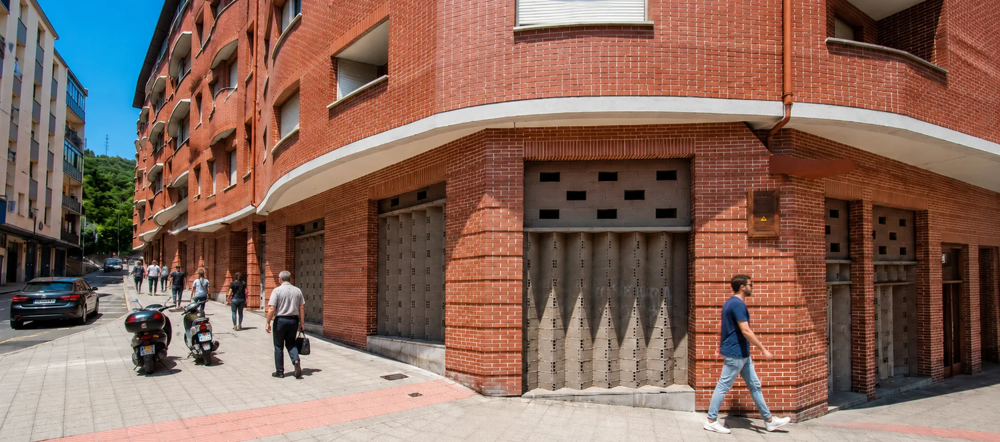
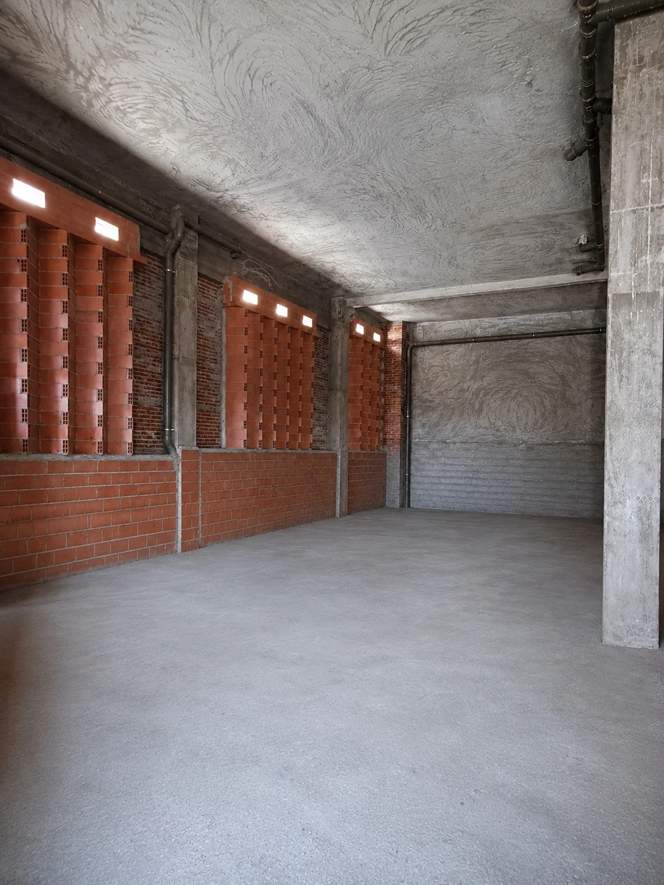
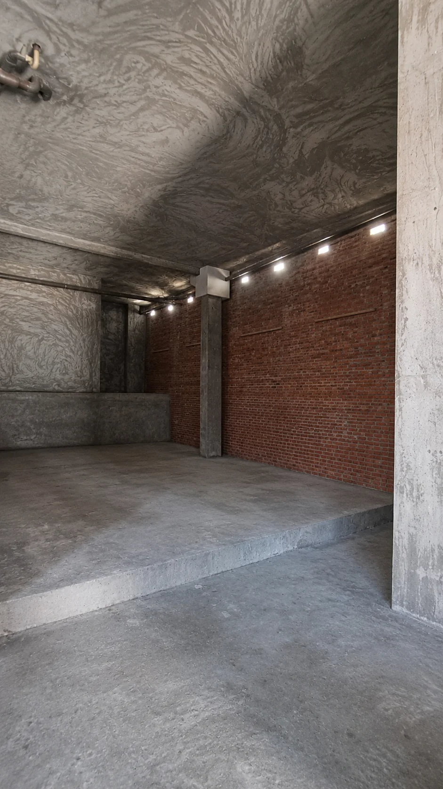
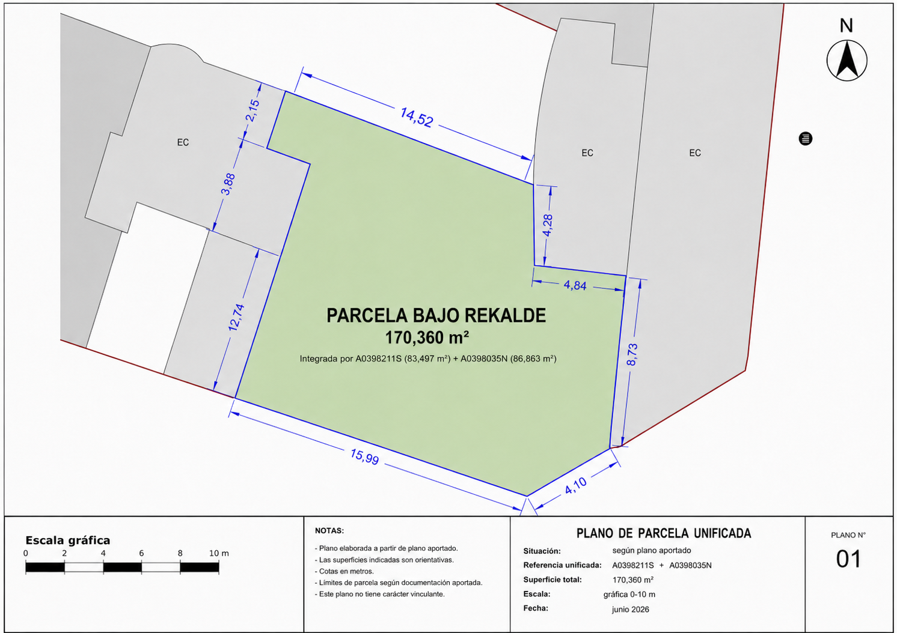

Escaparate de esquina
Más presencia urbana y mejor lectura desde dos calles para marca, señalética, campañas locales y recogidas programadas.



Bajo comercial en bruto · Rekalde
Local amplio y visible, con 170 m² y una altura aproximada de 5 m. Su valor está en la capacidad de transformación: permite diseñar desde cero una actividad con presencia exterior, identidad propia y operación física apoyada por venta online.
Plano

Lectura comercial
Rekalde es un barrio residencial consolidado, con uso cotidiano, población estable y servicios de proximidad. El entorno combina vivienda, supermercados, hostelería, academias, gimnasios, salud, servicios personales, logística urbana y pequeños negocios.
La oportunidad está en posicionar el local como proyecto reconocible: formación, actividad técnica, bienestar especializado, estudio creativo, showroom profesional o una operación híbrida con captación local, reserva online, click & collect o servicio recurrente.
Más presencia urbana y mejor lectura desde dos calles para marca, señalética, campañas locales y recogidas programadas.
La altura permite pensar en una intervención memorable: iluminación, zonas diferenciadas, almacenaje alto o experiencia de cliente.
Al estar en bruto, la inversión puede dirigirse al modelo de negocio: venta, formación, taller limpio, exposición u operación técnica.
Encaja con negocios que convierten digitalmente y usan el local como punto de confianza, entrega, demostración o comunidad.
Usos con mejor encaje
Formación práctica, idiomas, robótica, IA, programación, apoyo escolar y talleres para jóvenes o adultos.
Reformas, interiorismo, eficiencia energética, domótica, materiales o servicios ligados a vivienda.
Podcast, fotografía, creación digital, edición, plató ligero o formación audiovisual.
Fisioterapia, readaptación funcional, pilates terapéutico, entrenamiento para mayores o salud laboral.
Actividad mixta con atención al público, trabajo técnico, exposición y pequeña zona operativa.
Encaje condicionado a accesos, ventilación, salida de humos, incendios, normativa sanitaria y licencia.
Escenarios visuales
Contexto
Inventario propio orientativo: 133 actividades en el entorno, con presencia de hostelería, alimentación, educación, servicios personales, deporte, salud y bienestar.
Rekalde incorpora actuaciones de regeneración y mejora de barrio. El Plan Especial Severo Unzue - Doctor Díaz Emparanza y la futura Línea 4 refuerzan el interés de activos adaptables.
Cada uso debe validarse por compatibilidad urbanística, licencia, accesibilidad, evacuación, protección contra incendios, ventilación, instalaciones y condiciones sectoriales.